실제 울산 공공데이터 · 네 단계 시작 안내
실제 공공데이터 / 울산 상가업소
설명서에서 기준을 받고,
실제 데이터로 엑셀·PPT를 만듭니다
6월54,737행과9월53,777행, 각각39항목을 그대로 사용합니다. 원본을 복제해 규모를 늘린 자료가 아닙니다. 코드·업종·행정동·주소·좌표를 연결해 한 업무를 완성합니다.
1. 통합 참고자료를 자료 기반 AI에 등록하세요
RAG 통합 참고자료 TXT 받기 · 웹에서 원문·출처 읽기
- Gemini Notebook 등 자료 기반 AI에서 새 노트북을 만듭니다.
- 소스 추가 → 파일 업로드에서 통합 TXT 한 개를 고릅니다.
- 등록이 끝나 소스 목록에 파일이 보이는지 확인합니다. 여러 문서를 한 파일로 묶었으므로 소스1개가 정상입니다.
RAG에는 설명서·항목 정의·코드표·업무 안내를 넣습니다. 업소 원본 전체는3단계 파일 작업 AI에 별도로 전달합니다. API 키 발급은 필요하지 않습니다.
2. 기준과 다른 AI에게 줄 실행 요청을 함께 받으세요
아래 요청을 등록한 자료에 질문합니다. 실제 답변의 ①적용할 기준과 주의사항 ②파일 작업 AI에게 줄 실행 프롬프트 두 부분을 함께 복사합니다.
자료 기반 AI에게 보낼 요청
등록한 실제 공식 자료 전체와 강사의 업무 안내를 읽고 울산 상가업소 분포·두 시점 비교 보고를 준비해 줘.
먼저 [1. 적용할 기준과 주의사항]을 작성해 줘. 공식 활용가이드, 항목 설명, 2023 업종코드표에서 확인한 기준과 원문 위치를 적고 강사가 정한 보고 요구와 구분해 줘. 업종코드와 이름, 행정동과 법정동, 두 시점 자료의 의미, 좌표의 뜻과 자료의 한계를 확인해 줘. 확인되지 않은 조건은 임의 결정하지 마.
다음 [2. 파일 작업 AI에게 그대로 줄 실행 프롬프트]를 작성해 줘. 첫 부분의 기준을 빠뜨리지 말고 아래 작업을 실제 파일에서 수행하도록 요청해 줘.
입력은 ulsan-two-quarters.zip(2026년6월·9월 울산 원본 CSV 두 개), industry-codes-2023.csv(공식 업종코드표), ulsan-report-template.pptx(발표 양식)다. 원본 전체를 읽고 두 시점의 구·군별 업종 분포, 코드표에서 확인한 카페 업종의 행정동별 분포, 상가업소번호로 연결한 계속 관측·새로 관측·미관측, 좌표의 누락·범위·변경 상태를 정리해 줘. 자료 날짜와 실제 처리 범위를 확인해 줘.
원본의 업종 이름과 코드표의 이름이 다르면 원본을 덮어쓰지 말고 각각 별도 열로 보존해 줘. 매출이나 실제 개업·폐업·이전을 이 자료에서 확인한 것처럼 주장하지 마. 행정동과 법정동을 혼용하지 마.
명칭 차이를 보고할 때 대분류·중분류·소분류를 각각 구분해 세고 어느 수준의 차이인지 표시하게 해 줘. 소분류명 차이를 전체 업종명 차이라고 적지 않게 해 줘.
원본과 자료 출처를 보존하고 새 XLSX와 수정 가능한5장 PPTX를 다운로드로 제공하도록 요청해 줘. 보고 구성은 자료·범위/구군별 업종/카페 행정동 분포/두 시점 관측과 좌표 상태/한계와 후속 확인이다. 실제 파일 열기와 제목·표 수정, 엑셀과 발표 내용 일치를 완료 조건에 넣어 줘. 아직 점포 원본 파일은 받지 않았으므로 수치 계산이나 파일 생성이 끝났다고 말하지 마.
원본 CSV 두 개는 별도 원본으로 보존하고, 결과 XLSX에는 전체 행에서 계산한 집계·비교·차트·품질·출처를 담아 줘. 원본 수백만 셀을 결과 XLSX에 다시 복제할 필요는 없어. 사용자에게 셀 주소·수식·코드를 직접 입력시키지 말고 파일 작업 AI가 처리하도록 지시해 줘. 원본을 아직 받지 않았다는 현재 상태 설명은 첫 부분에만 두고, 두 번째 실행 프롬프트는 실제 원본이 첨부된 다음 단계에서 바로 수행할 명령으로 써 줘. 최종 답변은 위 두 부분을 모두 다른 AI에 복사할 수 있게 작성해 줘.
이름이 다른 업종을 코드로 연결하는 방법과 두 시점 관측의 의미를 원문 근거로 안내하는지 확인합니다. 이 단계의 AI는 업소 원본을 아직 받지 않았으므로 실제 집계·파일 생성 완료 단계가 아닙니다.
3. 실제 답변과 자료 세 개를 파일 작업 AI에 주세요
- 파일 생성이 가능한 AI의 새 대화에서 + 또는 클립을 눌러 세 파일을 첨부합니다.
- 2단계에서 실제 받은 두 부분의 답변을 함께 붙여넣고 전송합니다.
- 새 XLSX와 PPTX 다운로드가 나올 때까지 기다립니다. ZIP을 못 읽으면 압축을 풀고 원본CSV2개+코드표+양식4개를 첨부합니다.
파일 작업 AI 시작 문장
아래에 자료 기반 AI가 실제로 작성한 [업무 기준과 주의사항]과 [실행 프롬프트]를 함께 붙였습니다. 첨부한 실제 울산 두 시점 자료 ZIP, 공식 업종코드표 CSV, 발표 양식 PPTX를 읽고 작업해 주세요.
이 대화에는 실제 원본이 첨부되어 있습니다. 자료 기반 AI가 원본을 아직 받지 않았다고 설명한 부분은 앞선 기준 추출 단계의 상태입니다. 지금은 첨부 원본으로 실제 실행하는 단계입니다. ZIP 안의 CSV 두 개를 모두 풀어 전체 행을 처리해 주세요. 원본 CSV는 별도 원본으로 보존하고 결과 XLSX에는 전체 행에서 계산한 집계·비교·차트·품질·출처를 담아 주세요. 원본 수백만 셀을 결과 XLSX에 다시 복제할 필요는 없습니다. 업종코드표는 CP949 인코딩입니다. 명칭 차이는 대분류·중분류·소분류별로 구분하고 해당 분류 수준을 보고서에 표시해 주세요. 원본의 값과 이름을 바꾸거나 예시로 대체하지 말고 새 XLSX와 수정 가능한5장 PPTX를 다운로드로 주세요. 읽을 수 없거나 지원하지 못하는 작업은 먼저 알려 주세요.
[이 아래에 자료 기반 AI의 실제 답변 두 부분을 모두 붙여넣습니다]
설명·목차·“완료”라는 메시지만 있고 파일이 없으면 완료가 아닙니다. 결과 파일이 없다고 하면 원본과 기준을 다시 전달해 실제 저장과 다운로드를 요청합니다. 계정에서 지원하지 않으면 강사 예시로 결과 확인을 이어갑니다.
4. 실제 파일을 열고 내용을 수정해 보세요
- 응답 아래의 실제 XLSX·PPTX 파일 이름 카드를 엽니다. 미리보기 위쪽의 다운로드를 눌러 두 파일을 받습니다.
- 엑셀의 구군·업종·행정동 집계와 차트, 발표의5장 구성·시점·출처를 확인합니다.
- PPT 제목과 표의 내용을 직접 선택해 수정합니다. 엑셀과 발표 내용이 같은지 봅니다.
- 원본은 남겨 두고 새 파일로 보관합니다.
강사 집계 XLSX 예시 · 강사 PPTX 예시. 예시 열기와 본인 AI의 생성을 구분합니다. 촬영한 실제 AI 실행의 수정본도 XLSX와 PPTX로 별도 제공합니다. 예시는 원본 전체를 처리한 요약이며 원본CSV는 별도로 제공합니다.
다른 업종으로 반복할 요청
같은 실제 울산 두 시점 자료와 같은 보고 기준을 유지하고, 이번에는 카페 대신 공식 코드표에서 확인한 다른 업종 하나의 행정동 분포를 분석해 주세요. 선택한 업종과 적용한 코드표 항목을 먼저 알려 주세요. 앞서 만든 파일은 보존하고 새 이름의 XLSX와5장 PPTX로 저장해 주세요. 제목·차트·내용·출처를 새 분석 대상에 맞춰 갱신해 주세요. 매출·실제 개업·폐업·이전의 근거로 확대하지 마세요.
다른 대화나 도구에서 반복한다면 기준·실행 요청·원본·코드표·양식을 모두 다시 전달합니다. 단일 스냅샷 변화로 실제 개업·폐업·매출·이전을 단정하지 않습니다.
선택 참고 · 실제 작업 폴더와 지침 파일
폴더를 나누는 이유
ulsan-public-data/
├─ data/ 원본CSV·두분기ZIP·공식코드표
├─ references/ 공식가이드·충실추출TXT·항목설명·출처
├─ templates/ 발표양식
├─ prompts/ RAG·파일작업·반복 요청
├─ examples/ 강사 제공 집계 예시
├─ guide/ 지금 읽는 웹 안내
├─ AGENTS.md 일부 로컬 도구의 공통 작업 지침
└─ CLAUDE.md 공통 지침 참조
원본을 보존하고 결과와 구분하면 새 분석을 하거나 수정을 요청할 때 같은 입력으로 다시 시작할 수 있습니다. data/의 공란과 코드값을 손으로 고치지 않고 새 결과를 별도로 만듭니다. AGENTS.md는 반복할 목표·읽을 자료·처리 원칙·출력 조건을 한곳에 두기 위한 파일입니다. 파일의 자동 발견·적용 범위는 도구마다 달라 실제로 읽었는지 확인해야 합니다. 웹 AI에서는 필요한 내용을 직접 붙이거나 첨부합니다.
AGENTS.md 원문
# 울산 공공데이터 보고 작업 지침
## 목표와 자료
소상공인시장진흥공단의 울산 상가업소 2026-06-30·2026-09-30 공개 스냅샷 전체와 공식 업종코드표를 처리해 새 XLSX와 편집 가능한 5장 PPTX를 만든다. 학생 개인정보나 가상 참가자·만족도 데이터가 아니다. 작업 기준은 references/all-references.txt의 공식 원문과 강사 업무 안내를 구분해서 읽는다.
## 원본 보존과 전체 처리
- data/ulsan-two-quarters.zip의 원본 CSV 두 개와 data/industry-codes-2023.csv를 실제로 읽는다. ZIP 미지원이면 같은 이름의 CSV 두 개를 직접 첨부한다.
- 두 업소 CSV는 UTF-8, 공식 업종코드표는 CP949다. 코드는 문자열로 읽고 선행 0과 원본 값을 보존한다.
- 원본 39열과 모든 행을 보존한다. 미리보기나 임의 표본을 전체 처리라고 보고하지 않는다. 원본을 덮어쓰거나 공란을 추정해 채우지 않는다.
- 업소번호의 누락·중복과 각 파일의 실제 행 수를 먼저 검사한다. 중복이 있으면 임의로 첫 행을 고르는 과거 가상 사례 규칙을 적용하지 않는다.
## 코드와 두 시점의 의미
- 상권업종소분류코드와 코드표의 소분류코드로 연결하고 코드표의 유일성을 확인한다. 원본 업종명과 코드표 업종명은 각각 별도 열로 남긴다. 명칭 차이를 잘못된 행으로 제외하지 않는다.
- 상권업종과 표준산업분류, 행정동과 법정동을 구분한다. 행정동별 표는 코드와 구·군 이름을 함께 사용해 동명이름이 합쳐지지 않게 한다.
- 상가업소번호로 두 시점의 계속 관측·새로 관측·다음 시점 미관측을 구분한다. 이를 실제 개업·폐업으로 단정하지 않는다.
- 경도·위도의 빈값·숫자 형식·범위를 검사한다. 동일 업소의 좌표 변경과 주소 변경을 따로 센다. 좌표 변경만으로 이전했다고 결론 내리지 않는다.
- 매출·영업 이익·인구당 업소 수·변화 원인은 필요한 원천 자료가 없으면 산출하거나 추정하지 않는다.
## 결과와 완료
- 구·군×업종 분포, 코드표로 확인한 카페의 행정동 분포, 두 시점 관측 비교, 품질·출처를 담은 XLSX를 새로 저장한다. 원본 CSV를 XLSX에 전부 넣지 않았다면 원본은 별도 CSV이며 전체 행을 처리한 집계임을 명시한다.
- 제공된 ulsan-report-template.pptx의 5장 구성을 사용한다. 제목·본문·표는 수정 가능한 객체로 만들고 숫자·시점·출처를 XLSX와 일치시킨다.
- 파일을 실제 저장한 뒤 다운로드로 제공한다. 설명·목차·진행 메시지만으로 생성 완료라고 말하지 않는다. 직접 열어 보지 못했거나 지원하지 못한 기능은 구체적으로 알린다.
CLAUDE.md 원문
@AGENTS.md
# 같은 공공데이터 작업에 적용
공통 목표·원본 보존·코드 연결·시점 해석·출력 조건은 AGENTS.md를 따른다. 현재 도구가 참조 파일을 읽었는지 확인하고, 지원하지 않으면 해당 원문을 직접 전달한다. 웹 AI는 컴퓨터에 폴더가 있다는 이유만으로 이 파일들을 읽지 않는다.
실제 화면으로 따라가기
아래 화면은 실제 서비스와 편집기에서 촬영했습니다. 강사 예시를 연 화면과 실제 AI 실행 상태는 각 캡션에서 구분합니다. 사진을 누르면 원본 크기로 볼 수 있습니다.
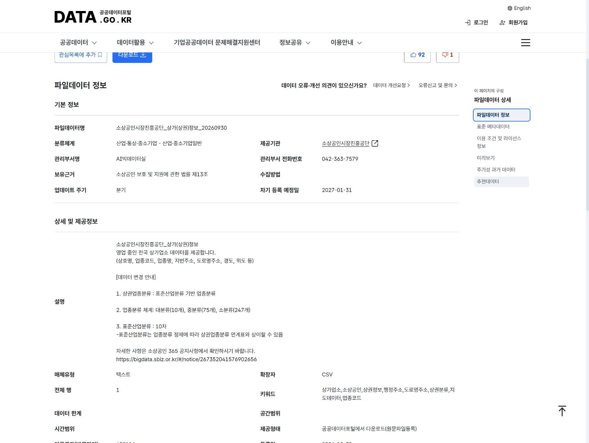
공식 공공데이터포털의 상가정보 설명파일데이터명·제공기관·업종분류 설명과 기준시점을 확인합니다.
소상공인시장진흥공단의 2026-09-30 자료와 대10·중75·소247 분류 안내가 보입니다.
2026-11-06 실제 화면 캡처입니다. 개인정보와 화면 집중을 위한 크롭만 적용했으며 UI·답변·결과를 합성하지 않았습니다. 포털의 전체 행 1은 카탈로그/다운로드 컨테이너 표시이며 실제 울산 CSV 행 수가 아닙니다. 실제 원본 파일을 읽어 확인한 행 수를 사용합니다.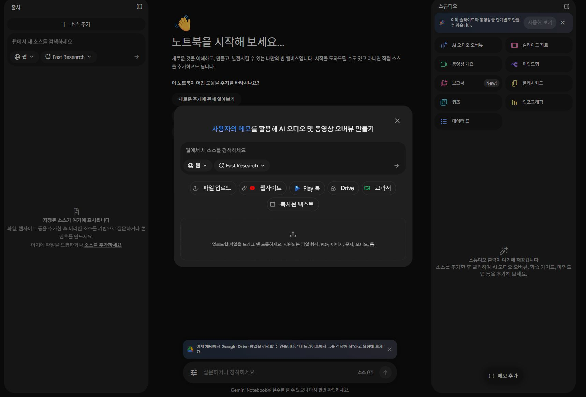
자료 기반 AI에서 공식 참고 묶음 업로드파일 업로드를 누르고 all-references.txt 한 개를 선택합니다.
공식 가이드·분류표·항목 설명과 강사 업무 지시를 통합한 TXT를 소스로 등록할 수 있습니다.
2026-11-06 실제 화면 캡처입니다. 개인정보와 화면 집중을 위한 크롭만 적용했으며 UI·답변·결과를 합성하지 않았습니다.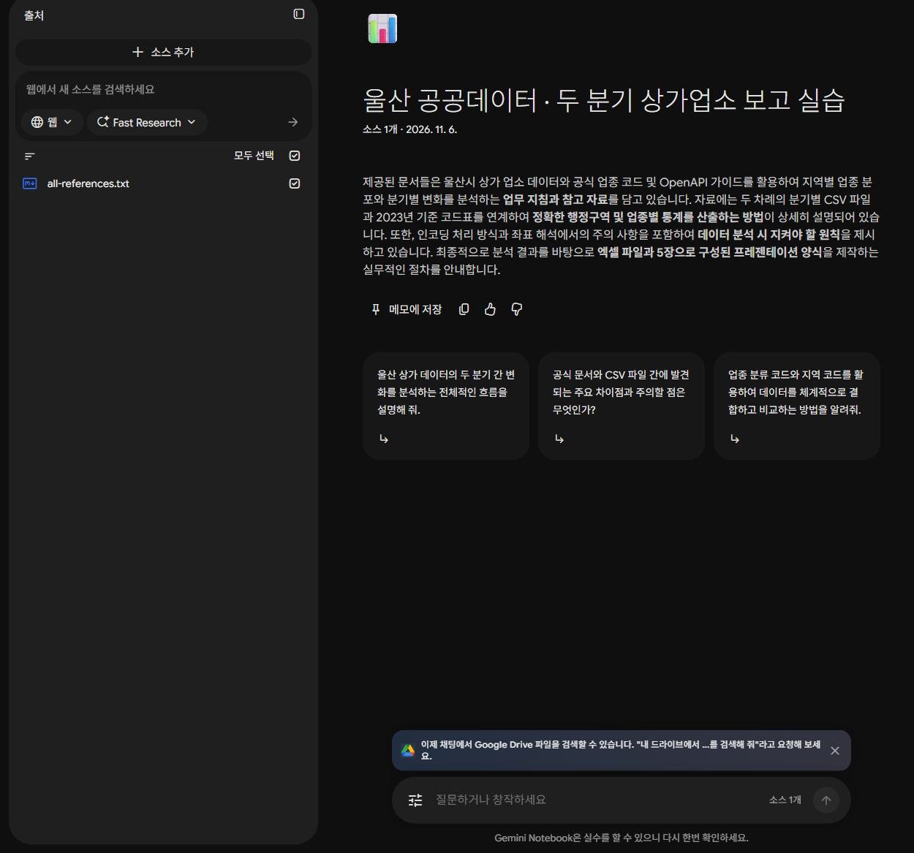
all-references.txt 등록 완료 · 소스 1개왼쪽 소스 목록의 all-references.txt가 선택되어 있는지 확인합니다.
여러 공식 참고 자료를 통합 파일 하나로 올렸으므로 소스 1개가 정상입니다.
2026-11-06 실제 화면 캡처입니다. 개인정보와 화면 집중을 위한 크롭만 적용했으며 UI·답변·결과를 합성하지 않았습니다. 가운데 요약은 자료 기반 AI가 생성한 소개이며 공식 기관 원문 자체와 구분합니다.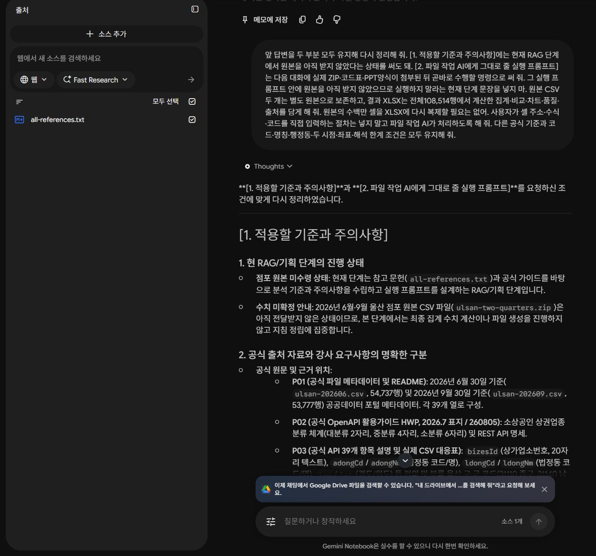
실제 RAG 답변 ① 적용할 기준과 주의사항적용 기준과 주의사항을 읽고 답변의 원문 근거를 확인합니다.
공식 원문과 강사 요구사항, 원본 CSV를 아직 받지 않은 RAG 단계가 구분되어 있습니다.
2026-11-06 실제 화면 캡처입니다. 개인정보와 화면 집중을 위한 크롭만 적용했으며 UI·답변·결과를 합성하지 않았습니다. 첫 답변을 두 부분으로 유지하고 다음 파일 작업 단계는 실행 명령으로 쓰도록 실제 추가 요청한 뒤 받은 두 번째 답변입니다.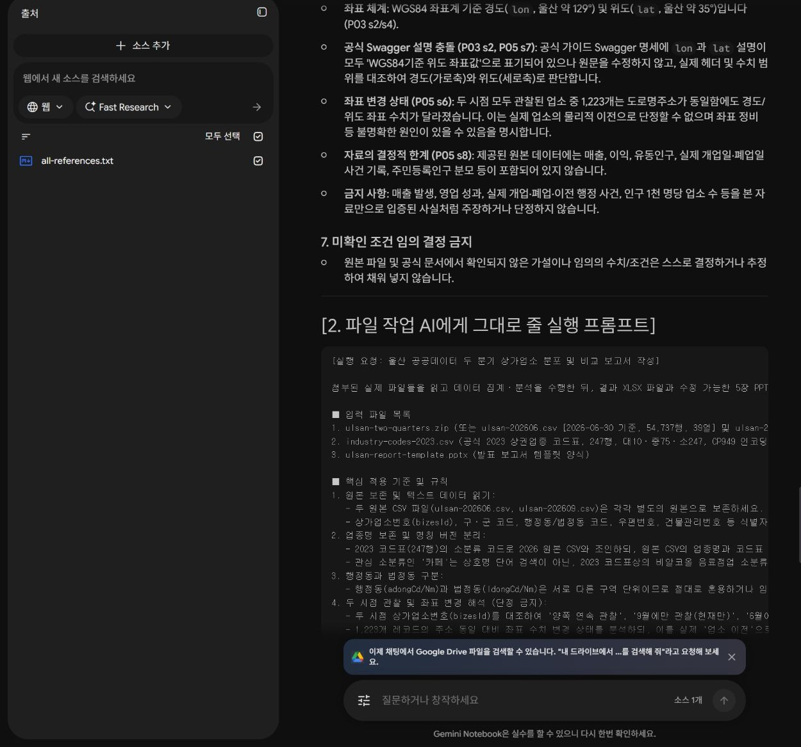
실제 RAG 답변 ② 파일 작업 AI에게 줄 실행 프롬프트앞의 기준·주의사항과 이 실행 프롬프트 두 부분을 모두 복사합니다.
실제 ZIP·업종코드표·PPTX 양식을 받아 전체 두 분기를 처리할 지시가 함께 있습니다.
2026-11-06 실제 화면 캡처입니다. 개인정보와 화면 집중을 위한 크롭만 적용했으며 UI·답변·결과를 합성하지 않았습니다. 공식 설명의 좌표 충돌과 분기 관찰·개업/폐업 해석의 차이도 실제 답변에 포함되어 있습니다. RAG가 원본 전체를 집계하거나 결과 파일을 만들었다는 화면은 아닙니다.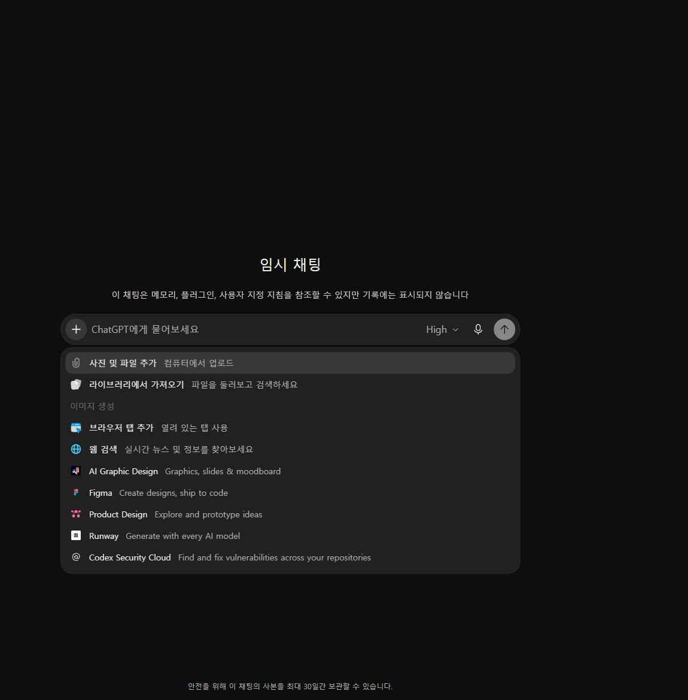
ChatGPT의 실제 파일 첨부 메뉴입력창의 +를 누르고 사진 및 파일 추가를 선택합니다.
내 컴퓨터에서 두 분기 ZIP·업종코드표·발표 양식을 첨부할 수 있습니다.
2026-11-06 실제 화면 캡처입니다. 개인정보와 화면 집중을 위한 크롭만 적용했으며 UI·답변·결과를 합성하지 않았습니다.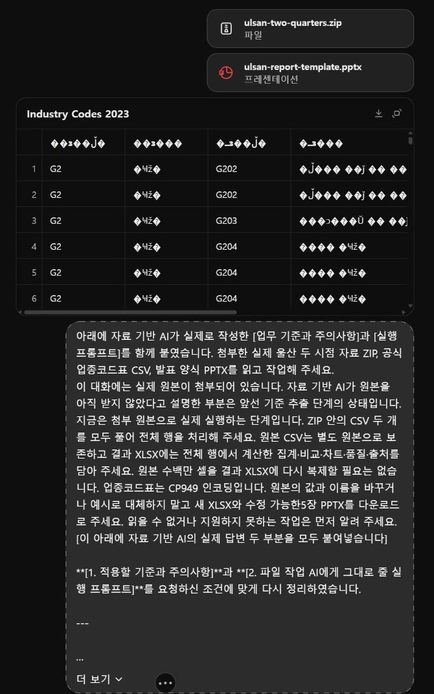
실제 세 파일과 RAG 답변을 함께 전송ulsan-two-quarters.zip·industry-codes-2023.csv·ulsan-report-template.pptx를 첨부하고 실제 RAG 답변 두 부분을 함께 보냅니다.
두 원본 CSV가 든 ZIP·공식 코드표·양식과 전체 처리 요청이 같은 대화에 전달됩니다.
2026-11-06 실제 화면 캡처입니다. 개인정보와 화면 집중을 위한 크롭만 적용했으며 UI·답변·결과를 합성하지 않았습니다. 공식 코드표는 CP949이므로 이 웹 미리보기의 한글은 깨져 보입니다. 원본을 고치지 않았으며 같은 실행에서 AI는 인코딩을 지정해 실제 247행을 정상적으로 읽었음을 확인했습니다. 이 사진은 요청 전송 상태이며 최종 XLSX·PPTX 생성 완료 화면이 아닙니다.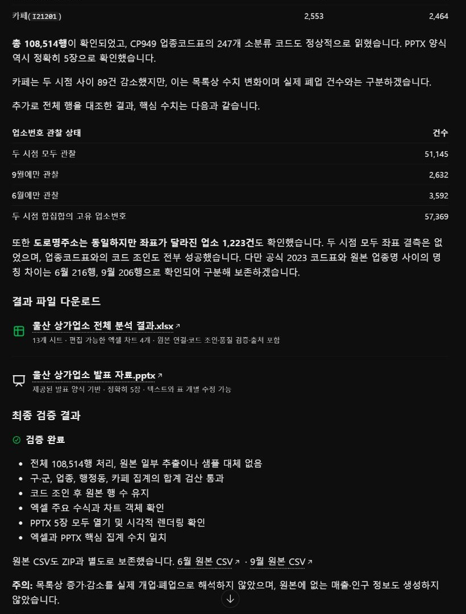
실제 AI가 XLSX·PPTX 결과를 제공한 화면응답 아래에서 실제 XLSX·PPTX 파일 이름 카드를 열고 미리보기 상단의 다운로드를 누릅니다.
이 실행에서는 13개 시트의 XLSX와5장 PPTX가 제공되어 실제로 내려받았습니다.
실제 서비스 화면을 촬영하고 개인정보·집중을 위해 크롭했습니다. 화면의 검증 완료는 AI의 주장입니다. 다운로드 후 별도 검토에서 주요 수치는 일치했지만 분류 수준 설명 두 곳이 모호해 소분류명 차이로 고치도록 추가 요청했습니다. 강사 제작 예시와 구분되는 실제 외부AI 실행입니다.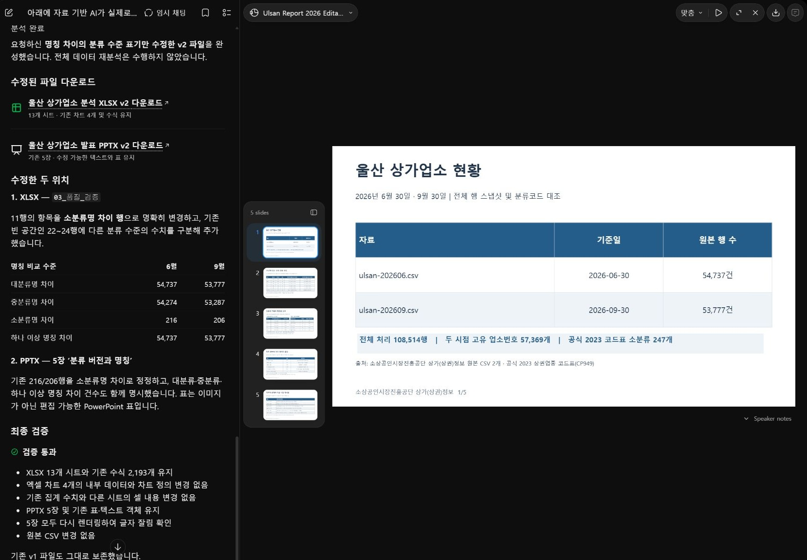
수정된 실제 AI 파일의 미리보기와 다운로드실제 XLSX·PPTX 파일 이름 카드를 열고 오른쪽 미리보기 위쪽의 아래 화살표 다운로드를 누릅니다.
명칭 차이의 분류 수준을 보완한 v2 파일과5장 미리보기가 보입니다.
실제 서비스 화면입니다. 이 실행에서 XLSX와 PPTX 두 파일을 내려받았습니다. 왼쪽 검증 설명은 AI의 답변이며 다운로드 후 별도로 기존 수치·수식·차트 보존을 확인했습니다. 화면 집중·개인정보 보호를 위한 크롭만 적용했으며 화면 합성은 하지 않았습니다.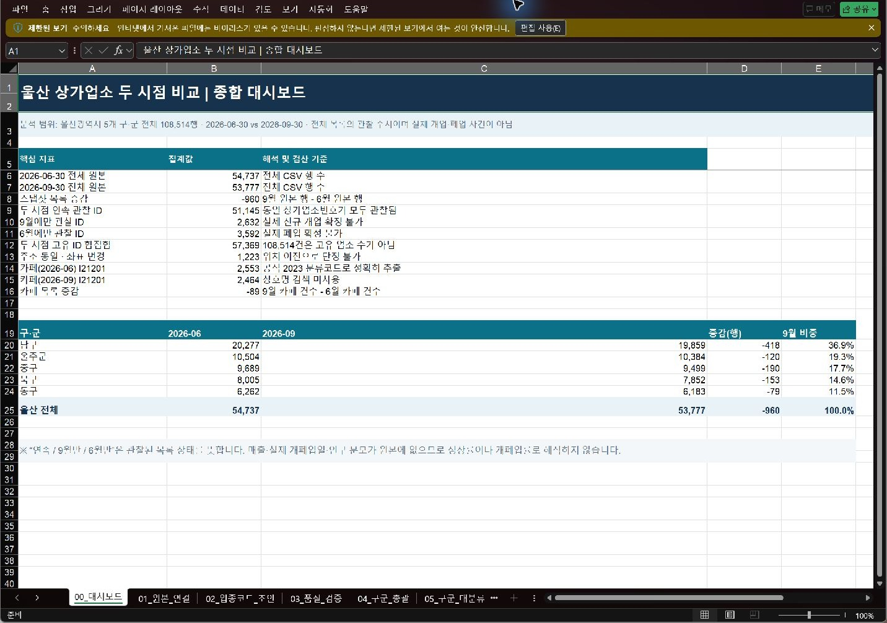
실제 AI가 만든 수정본을 Excel에서 열기받은 XLSX를 Excel에서 열고 아래 시트 탭을 눌러 요약·업종·행정동·출처를 살펴봅니다.
전체108,514행에서 집계한 대시보드와 구군 비교가 실제 Excel에 보입니다.
별도 artifact_tool 강사 예시가 아니라 실제 ChatGPT 실행에서 내려받은13개 시트의 v2 파일입니다. 원본 CSV는 별도로 보존합니다. 이 화면은 제한된 보기 상태이며 편집하려면 본인이 생성한 파일인지 확인하고 편집 사용을 누릅니다. 화면 집중·개인정보 보호를 위한 크롭만 적용했으며 화면 합성은 하지 않았습니다.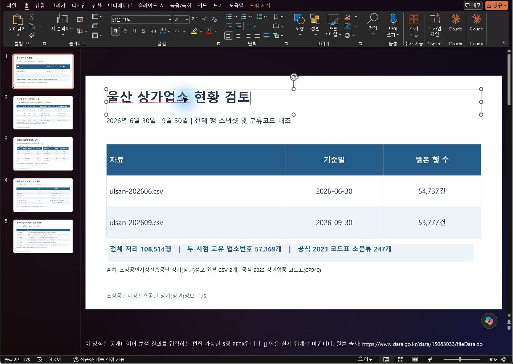
실제 AI 발표의 제목을 PowerPoint에서 수정제목 안을 클릭한 뒤 원하는 글자를 입력합니다. 원본을 남기려면 새 이름으로 저장합니다.
5장 발표의 제목 텍스트 상자와 실제로 덧붙인 검토 글자가 보입니다.
실제 ChatGPT v2 파일을 PowerPoint에서 열어 제목에 검토를 덧붙인 실제 화면입니다. 촬영 후 되돌렸고 원본·배포 파일에 이 변경을 저장하지 않았습니다. 표는 개별 편집 가능한 객체6개로 확인했습니다. 화면 집중·개인정보 보호를 위한 크롭만 적용했으며 화면 합성은 하지 않았습니다.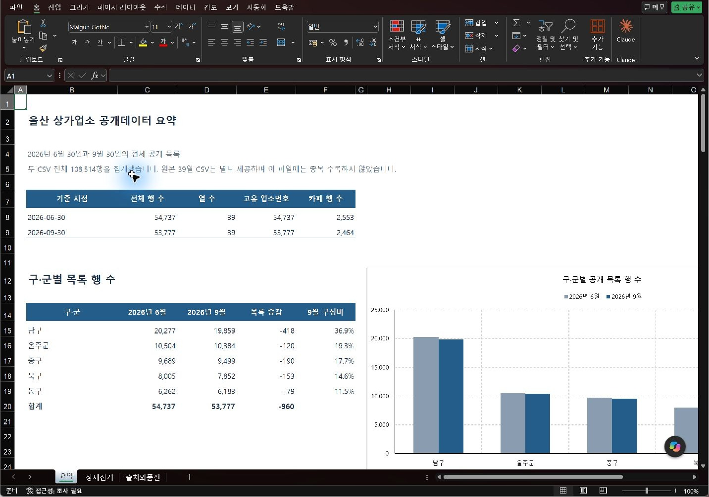
강사 예시 XLSX를 실제 Excel에서 열기받은 XLSX를 Excel에서 열고 요약·상세집계·출처와품질 시트를 확인합니다.
전체 두 CSV 108,514행을 집계한 요약표와 구군별 차트가 실제 편집기에 보입니다.
2026-11-06 실제 화면 캡처입니다. 개인정보와 화면 집중을 위한 크롭만 적용했으며 UI·답변·결과를 합성하지 않았습니다. 강사가 artifact_tool로 전체 원본을 집계해 만든 3개 시트의 예시 파일입니다. 현재 ChatGPT 실행에서 생성된 결과가 아니며, 본인 AI가 만든 파일과 구분합니다. 원본 39열 CSV는 별도 보존하고 이 예시 XLSX에 중복 수록하지 않았습니다.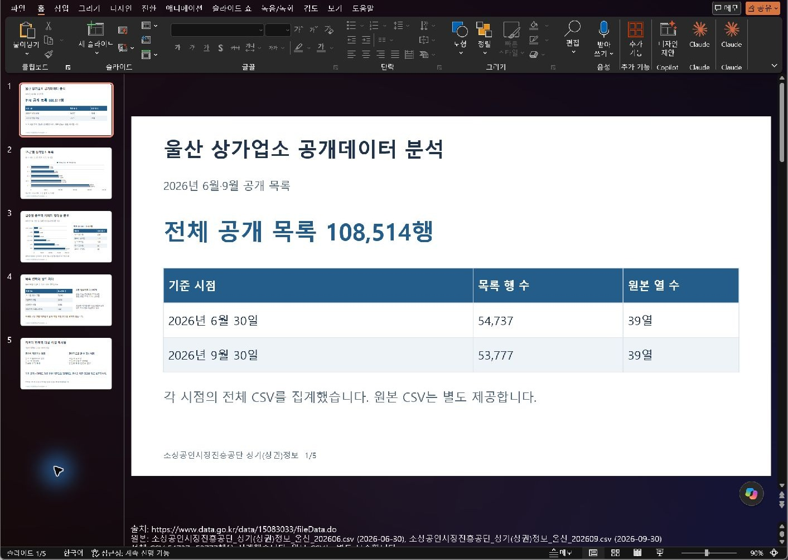
강사 예시 PPTX를 실제 PowerPoint에서 열기받은 PPTX를 PowerPoint에서 열고 왼쪽의 5장과 회차·출처를 확인합니다.
두 분기 전체 공개 목록을 보고하는 5장 발표 파일이 실제 편집기에 열립니다.
2026-11-06 실제 화면 캡처입니다. 개인정보와 화면 집중을 위한 크롭만 적용했으며 UI·답변·결과를 합성하지 않았습니다. 강사가 artifact_tool로 만든 실제 5장 예시 파일을 연 화면입니다. 현재 ChatGPT 실행의 생성 결과가 아닙니다. 수업 양식과 본인 생성 결과, 강사 예시는 각각 구분합니다.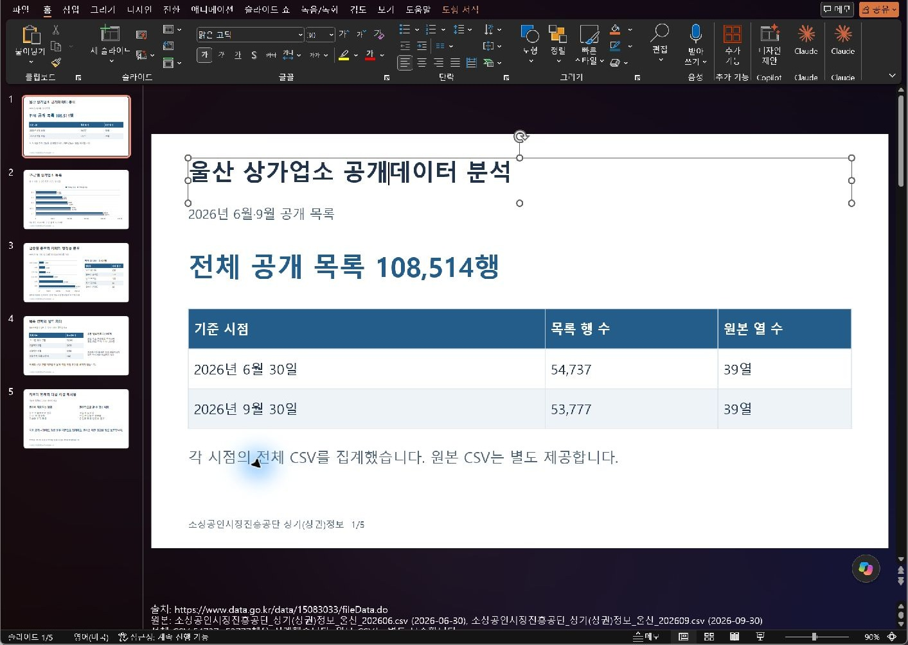
강사 예시의 개별 제목 텍스트 선택슬라이드 제목을 클릭해 개별 텍스트 요소로 선택되는지 확인하고 글자 하나를 수정해 봅니다.
제목 텍스트 상자의 선택 경계가 보입니다. 한 장 전체가 통이미지로만 선택되는 화면과 구분합니다.
2026-11-06 실제 화면 캡처입니다. 개인정보와 화면 집중을 위한 크롭만 적용했으며 UI·답변·결과를 합성하지 않았습니다. 강사가 artifact_tool로 만든 예시 PPTX를 실제 PowerPoint에서 선택한 화면이며 현재 ChatGPT 생성 결과는 아닙니다. 이 사진은 제목 객체의 선택 상태를 보여 주며 모든 차트의 데이터 편집 가능성까지 증명하지 않습니다.